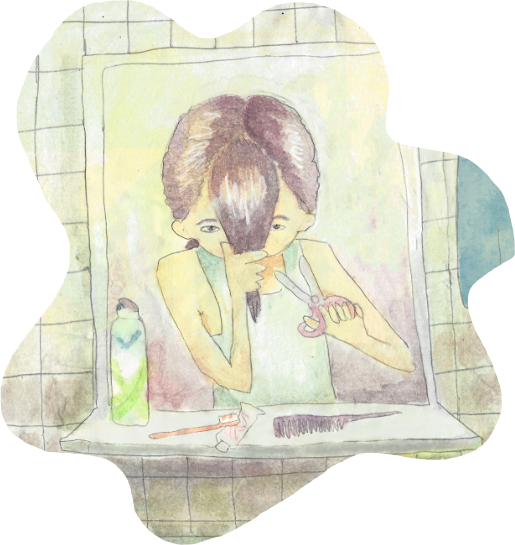

Sobre mim

hey I’m Sarah!
I’m an animator, musician, and illustrator based in Lisbon.
I love classic jazz and funk, obscure animal trivia, and early internet aesthetic.
I dabble in many creative areas, but I have a particular love for the ways music and art combine to tell stories.
I’ve freelanced for Nickelodeon, Disney, Pixar, and CN, and have boarded on We Bare Bears, Centaurworld, and The Ghost & Molly McGee.
I’ve also done background paint for the interactive Netflix show We Lost Our Human. I’m also Emmy-nominated, somehow.
My tunes can be found on Bandcamp, or on Spotify. Also, there’s animation and music on Youtube.
You can find me on Bluesky or Instagram, sometimes.
Reach out at saronha05@gmail.com!